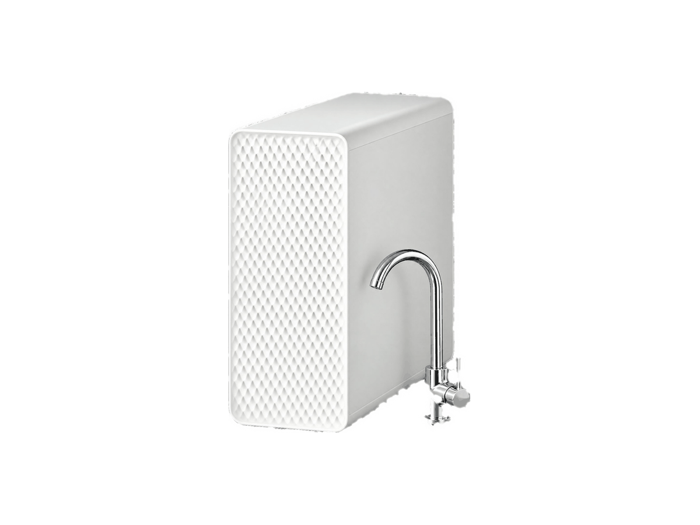
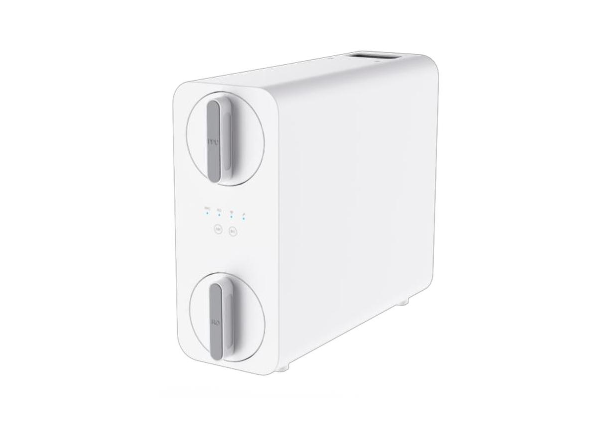
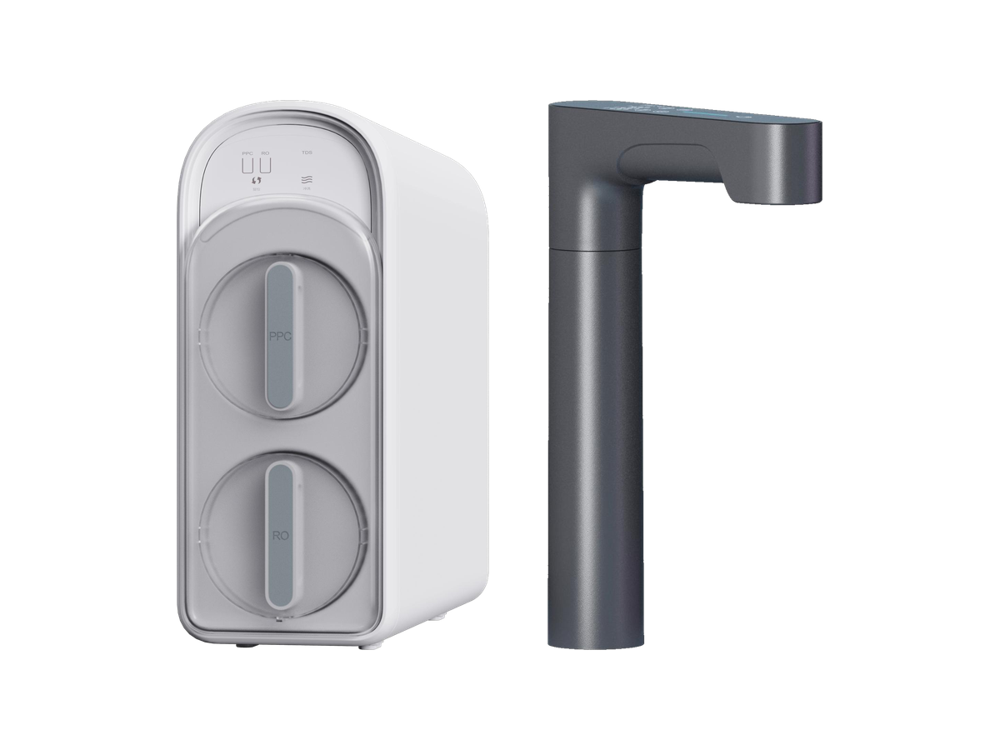
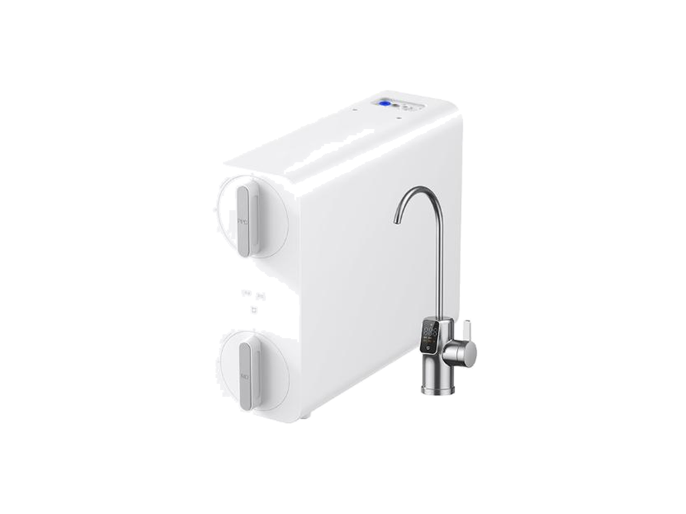
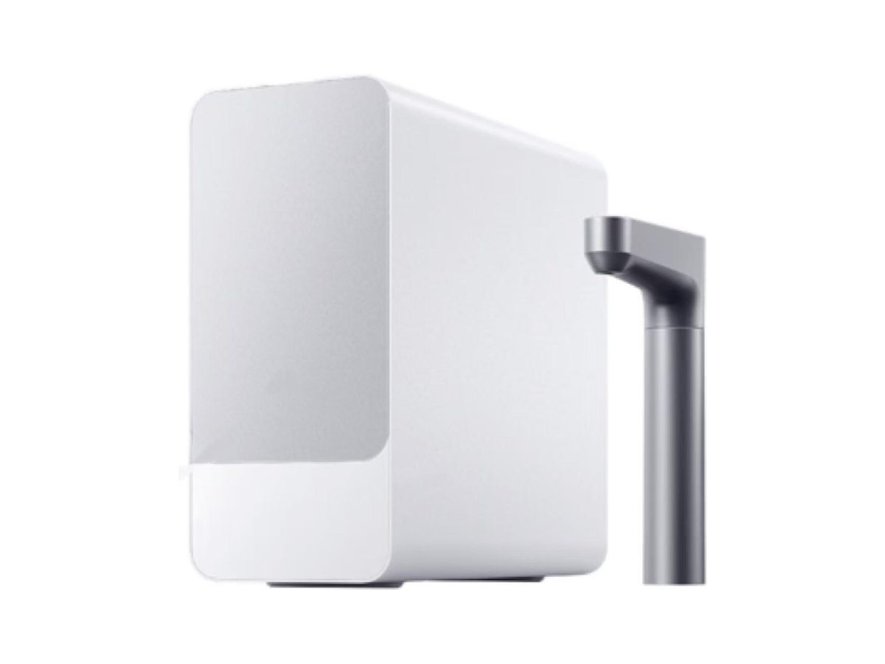

厨下式
厨下式RP-U07
400–600 GPD 厨下式 RO 净水器
SKU: RP-U07
起订量：询价时确认

厨下式 RO 系统
紧凑型双滤芯 RO 平台 (X612)
RP-U05 — 紧凑型双滤芯 RO 平台. 关键规格： RO 产水量 400 / 600 / 800 / 1000 / 1200 GPD. 规格按型号及订单确认。
电压／频率可按目标国家配置，其他配置按订单确认。
RP-U05 平台共五种选择——报价时请注明 RP-U05 及具体款式。
将鼠标悬停在款式图片上查看对应参数。触屏设备请点按图片。




各变体的完整参数并排对比。下方的规格表为 RP-U05 的参数。
| 规格 | RP-U05-1 — 主款 (X612) | RP-U05-2 — 600/800/1000G 款 (X605) | RP-U05-3 — 600/800/1000G 款，可配加热龙头 (X606) | RP-U05-4 — 800G 款 (MR852-C) | RP-U05-5 — 1000G 即热款 (MRH1032) |
|---|---|---|---|---|---|
| RO 产水量 | 400 / 600 / 800 / 1000 / 1200 GPD | 600/800/1000G | 600/800/1000G | 800G | 1000G |
| 尺寸 (L×W×H) | 400 × 130 × 320 mm | 427 × 148 × 346 mm | 466.7 × 150 × 369.3 mm | 427 × 148 × 346 mm | 471 × 198 × 429 mm |
| 滤芯数量 | 2 支 | 2 支 | 2 支 | 2 支 | 2 支 |
| 过滤级数 | 按订单确认（Confirmed per order） | 5 级 | 5 级 | 5 级 | 6 级 |
| 龙头类型 | 按订单确认（Confirmed per order） | 智能数显龙头 | 智能数显龙头／加热龙头 | 智能数显龙头 | 加热龙头 |
| 水效等级 | 按订单确认（Confirmed per order） | 1 级 | 1 级 | 1 级 | 1 级 |
| 额定净水量 | 6000 L | 按订单确认（Confirmed per order） | 按订单确认（Confirmed per order） | 按订单确认（Confirmed per order） | 按订单确认（Confirmed per order） |
| 额定总净水量 | 按订单确认（Confirmed per order） | 4800 L | 4800 L | 4800 L | 6500 L |
| 电压／频率 | Configurable to target country | Configurable to target country | Configurable to target country | Configurable to target country | Configurable to target country |
ROPureOEM 目录中的 7 行规格。
| RO 产水量 | 400 / 600 / 800 / 1000 / 1200 GPD |
|---|---|
| 过滤方式 | PPC + RO |
| 额定净水量 | 6000 L |
| 尺寸 L×W×H | 400 × 130 × 320 mm |
| 选项 | Dual water / recirculation / heating |
| 电压／频率 | Configurable to target country |
| 其他配置 | 按订单确认（Confirmed per order） |
规格来源于 ROPureOEM 目录。尚未确认的数值标注为“按订单确认（Confirmed per order）”，不发布未经确认的参数。